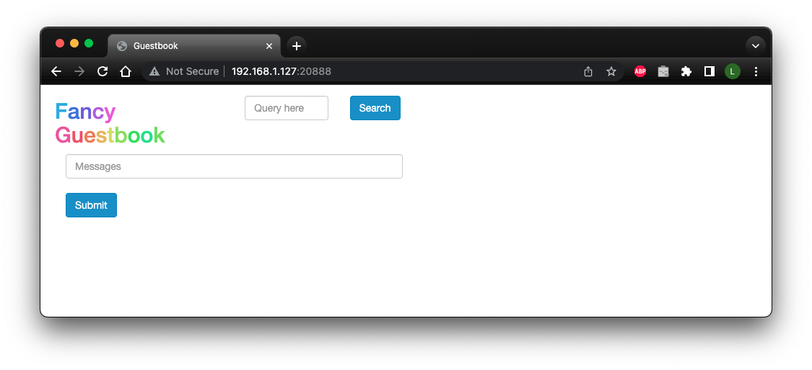

Argo CD
Argo CD is a declarative, GitOps continuous delivery tool for Kubernetes.
Getting started
If managing Makefile includes manually, you must append microk8s and argocd to MAKESTER__INCLUDES to
enable the Makester Argo CD subsystem.
Argo CD needs to be deployed into a Kubernetes cluster. As such, Start by checking the MicroK8s status:
Follow the prompts to start MicroK8s, or refer to the Makester microk8s
subsystem documentation for further information on how to install MicroK8s.
To get an Argo CD instance deployed onto MicroK8s with minimal fuss:
On successful completion of the target, you will be provided with the URL to the Argo CD API server and the login credentials. For example:
...
### Waiting for argocd-server pod in argocd namespace to be ready ...
2023-04-10 21:48:46 logga [INFO]: Checking host:port 192.168.1.127:20443 Argo CD API server ...
2023-04-10 21:48:47 logga [INFO]: Port 20443 ready
### Argo CD API Server address forwarded to: https://192.168.1.127:20443
### Argo CD API Server log output can be found at /home/lupco/dev/makester/.makester/argocd-dashboard.out
### Login to the Argo CD API Server as user "admin" with following password:
bT9jKItiqd3tmSfY

Enter the credentials to land on the main Argo CD applications page:

A sample web app can be deployed to demonstrates how to enable a service with Argo CD:
You can interact with the app deployment via the Argo CD applications page:

To remove the sample app:
To clean up all resources:
Command reference
Login to the Argo CD CLI
Use the password generated with the argocd-creds target.
Dump the Argo CD credentials in plain-text
Sample output:
### Login to the Argo CD API Server as user "admin" with following password:
bT9jKItiqd3tmSfY
Start the Argo CD API server
The target will also provide the credentials required to basic authenticate against the Argo CD API server UTR:
Sample output:
2023-04-10 21:51:12 logga [INFO]: Checking host:port 192.168.1.127:20443 Argo CD API server ...
2023-04-10 21:51:13 logga [INFO]: Port 20443 ready
### Argo CD API Server address forwarded to: https://192.168.1.127:20443
### Argo CD API Server log output can be found at .makester/argocd-dashboard.out
### Login to the Argo CD API Server as user "admin" with following password:
bT9jKItiqd3tmSfY
Stop the Argo CD API server
Tears down the Kubernetes port-forward to the Argo CD API server.
Depoly Argo CD into MicroK8s
Convenience all-in-one target to stand up an Argo CD instance:
Argo CD deployment clean up
Create the Argo CD example guestbook application
You will be prompted for the Argo CD CLI login credentials that are the same as those provided
by the argocd-dashboard target:
Delete the Argo CD example guestbook application
Start the Argo CD example guestbook application UI
Creates a Kubernetes port-forward to the sample web app:
Sample output:
### Argo CD Example App UI: http://192.168.1.127:20888 (Ctrl-C to stop)
Forwarding from 0.0.0.0:20888 -> 80
The web app is a simple interface with limited capability: 
Install an Argo CD instance into the argocd namespace
Create the argocd namespace
Delete the argocd namespace
Argo CD deployment and API server setup
All-in-one convenience target to install the required addons and deploy Argo CD into MicroK8s:
Variables
MAKESTER__ARGOCD_DASHBOARD_PORT
The Argo CD API Server port (default <20443>).